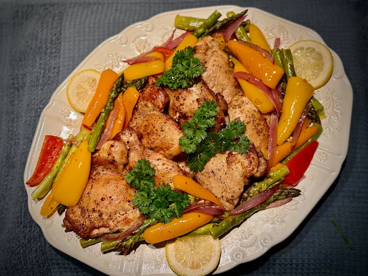

Garlic chicken recipe

Tasty and healthy meal
The chicken thighs roasted along with bell peppers and asparagus provides a delicious dinner.
Ingredients
- 2 pounds skinless, boneless chicken thighs
- Salt and freshly ground black pepper to taste
- 1/4 cup unsalted butter
- 1/2 cup sliced red onion
- 4 cloves garlic, minced
- 2 teaspoons Greek seasoning
- 1 pound asparagus, washed, trimmed, and halved
- 6 mini bell peppers, assorted colors, seeds removed, quartered
- 1/2 cup chicken broth
- 1 lemon, zested and juiced
- Lemon slices, for garnish (optional)
- Fresh parsley sprigs, for garnish (optional)
Steps
- Preheat the oven to 400 degrees F (200 degrees C) and line a sheet pan with foil or parchment paper. Pat chicken thighs dry with paper towels and season with salt and pepper.
- Melt butter in a large skillet over medium-high heat. When butter is sizzling, add chicken and cook until browned, 3 to 5 minutes per side. Place chicken on the prepared sheet pan.
- Roast chicken in the preheated oven for 15 minutes.
- To the same skillet, off the heat, add onion, garlic, and Greek seasoning. Stir, warming in the skillet off the heat, but not cooking. Stir in asparagus and bell peppers.
- Combine chicken broth, lemon zest, and lemon juice in a small bowl. Stir into the skillet with the vegetables, and allow to sit off the heat.
- Turn chicken thighs over, and add just the vegetables to the sheet pan around the chicken. Ladle about 2 tablespoons of the pan liquid over each chicken thigh.
- Return to the oven and bake until chicken is no longer pink at the center, juices run clear, and an instant read thermometer inserted near the center of chicken reads 165 degrees F (74 degrees C), about 15 minutes more.
- Place chicken pieces in the center of a serving dish and surround with vegetables. Garnish with lemon slices and fresh parsley sprigs. Serve warm.
Home